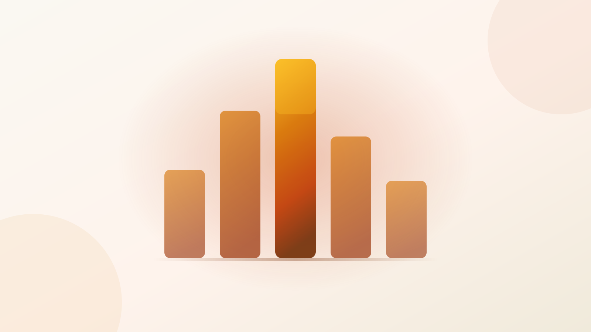

The toast
league table
Sonner tops the table on installs by a factor of ten. It has not shipped a release in eleven months. Both facts are on this board — and they do not point the same way.
installs [1]
(4.0M) [10]
dependencies [1]
half the field [4]
last shipped [1]
The table
Sorted by weekly installs · standalone librariesFour standalone toast libraries, ranked the way the ecosystem ranks them: by how often npm hands them out. Read across each row — the position column and the release column disagree, and that disagreement is the whole story.
Two tables, two champions
The same four clubs, ranked twiceRe-sort the field by who is actually shipping code and the leader drops to third. Nobody moves except by standing still.
Ranked by weekly installs
by cadence
Ranked by last npm release
The install count is not a popularity vote — it is a lagging indicator of one scaffolding decision. shadcn/ui deprecated its own toast and now tells every user to install Sonner instead [29] [30]. That single default produced the 10× gap.
It is still worth something: the install graph is what determines how much Stack Overflow, LLM training data and third-party wrapper code exists for a library. Just don't read it as a health score. The most-installed library has the quietest repo — ~11 months without a release, ~7 without a commit, a single maintainer [6]. The risk with Sonner is bus factor, not bugs. A toast library is a small, finished problem.
Spec sheet
✓ full · ~ partial · ✗ absentAll four standalone libraries converge on the same shape — mount one container at the app root, call an imperative toast() from anywhere. No context, no prop drilling, callable from a catch block. Everything below is what separates them after that.
| Capability | Sonner | react- toastify |
react-hot- toast |
notistack | Mantine | Chakra v3 | Base UI | MUI Snackbar |
|---|---|---|---|---|---|---|---|---|
| Imperative APIcall from anywhere, no context | ✓ | ✓ | ✓ | ✓ | ✓ | ✓ | ✓ | ✗declarative only |
| toast.promise()loading → success / error | ✓ | ✓ | ✓ | ✗manual update | ✗manual update | ✓ | ✓ | ✗ |
| Arbitrary JSX contentbring your own component | ✓ | ✓ | ✓ | ✓ | ~Styles API | ✓ | ✓ | ✓ |
| Headless / unstyledyou own every pixel | ✓ | ~ | ✓ | ~ | ✗ | ~ | ✓by design | ✗ |
| Visible-count cap / queuelimit, maxSnack, visibleToasts | ✓ | ✓ | ✓ | ✓ | ✓FIFO + priority | ✓ | ✓ | ✗no queue at all |
| Stack-and-expand on hoverthe Sonner look | ✓ | ✗ | ✗ | ✗ | ✗ | ✓overlap | ✓ | ✗ |
| Multiple independent toasterscontainerId routing | ~ | ✓ | ✓new in 2.6.0 | ✗ | ✗ | ✓ | ✓ | ✗ |
| Zero CSS import neededno forgotten stylesheet | ✓ | ✓auto since v11 | ✓ | ✓ | ✗styles.css required | ✓ | ~you write it | ✓ |
| CSP nonceinjected style tag | ~ | ✓11.1.0 | ~ | ~ | ✓ | ✓ | ✓ | ✓ |
| Swipe-to-dismisstouch gesture | ✓ | ✓ | ✗ | ✗ | ✗ | ✓ | ✓ | ✗ |
| Ships its own typesno @types/* needed | ✓ | ✓ | ✓ | ✓ | ✓ | ✓ | ✓ | ✓ |
MUI Snackbar is the outlier and the reason notistack exists at all: one snackbar bound to an open prop, no queue. The MUI docs themselves point at notistack for stacking [37]. On MUI you are choosing between hand-rolling a queue, adopting a library that has not published in 18 months, or dropping Sonner in next to MUI — Sonner has no MUI coupling.
The bench
Design-system natives — already on your payrollIf the design system is already in the bundle, its toaster costs ~0 marginal bytes and matches your theme for free. That beats every number in the table above.
notifications.show() from anywhere, a real FIFO queue with a priority field that bumps ahead of older toasts. No promise() helper — do it with update().
styles.css import [34]The most complete built-in of the four: toaster.promise(), max, overlap stacking, pauseOnPageIdle, composable parts, built on Ark UI.
The MUI team's headless successor to Radix, and a genuine competitor now that it's stable. useToastManager(), a global manager for firing outside React, F6 landmark nav, fully unstyled.
Pick by constraint
The only sort that matters is yoursTake Sonner.
Don't agonise.
Migrating away from a toast library is a mechanical find-and-replace of toast() call sites plus one root component. The switching cost is close to zero — which is exactly why this decision does not deserve the week you were about to spend on it.
Take the table leader. Revisit when a constraint bites: a bundle budget, an a11y audit, or an upstream fix you need landed this quarter. Only the last one puts you on react-toastify — and only because it is the one whose maintainer is currently shipping.